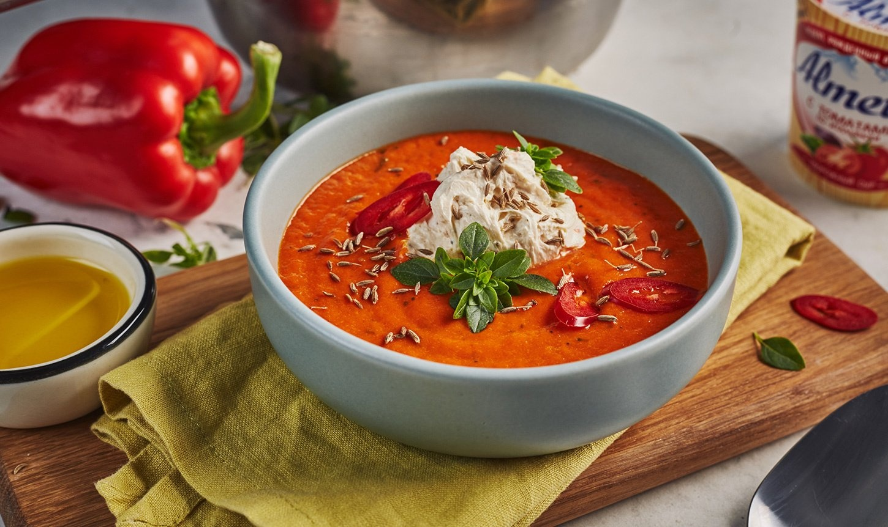

Суп-пюре из болгарского перца

- Ингредиенты:
- Лук – 1 шт.
- Болгарский перец – 6 шт.
- Масло подсолнечника – 35 мл.
- Масло сливочное – 35 г.
- Морковь – 1 шт.
- Куриный бульон – 1 ст.
- Вода – 300 мл.
- Сельдерей – 70 г.
- Чеснок – 3 зуб.
- Лавровый лист – 1 шт.
- Соль – по вкусу.
- Рецепт приготовления:
- Перчик промойте водой, разложите по противню. Отправьте в духовку на 35 минут, запекайте при температуре 180 градусов. Остудите немного, снимите шкурку, удалите семена.
- Морковку натрите крупной соломкой, а луковицу нарежьте мелко. Небольшими кусочками порежьте сельдерей. Через специальный пресс пропустите зубчики чеснока.
- В толстостенной кастрюле разогрейте растительное и сливочное масло. Высыпьте овощи, жарьте примерно 10 минут. После этого добавьте мякоть печеного перца, лавровый лист и соль.
- Овощи залейте куриным бульоном, смешанным с водой. Варите до мягкости продуктов. Спустя время уберите из кастрюли лавровый лист. С помощью погружного блендера превратите массу в пюре, доведите до кипения.